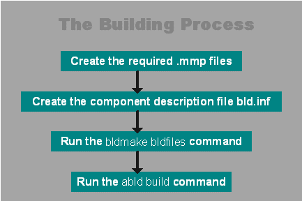

|
| |
The build process provides a consistent interface for all Symbian build activities. To build a component you will need the following files:
a project definition file (.mpp file) that describes
a project to be built. This is an environment neutral file that can be used by
the tools to produce make files for any of the supported target environments.
It also defines resource file and application information files to be
built.
a component description file (bld.inf), which lists
all the projects in a component, and gives additional build instructions.
The tools used to process these files include bldmake,
abld and (usually not directly) makmake. The actual
process is detailed below.
Note that the GUI tool MEAD, with access to abld and bldmake functionality, provides an alternative method to using this building process. See The application development wizard.
The procedure below summarises the build process.
Create a project specification, or mmp file.
Create a bldmake component definition file
(bld.inf). In many cases this will specify a single project
mmp file.
Run bldmake from the directory where the
bld.inf file is located:
> bldmake bldfiles
This creates the abld.bat batch file.
Use abld build to build the project.
abld calls nmake on the appropriate
.make files, calls the resource compiler to create the resource
file, and may call bmconv to create a multibitmap icon file and
aiftool to create an application information file.
Generally, for any component, the minimal sequence of actions and commands needed to build the component are as follows:

Build process
|
You can build applications for the Emulator (WINS platform) from
within the Microsoft Visual C++ 6 IDE. To do this, define a
bld.inf file and a .mmp file, and run bldmake
bldfiles as described. Then to generate the IDE workspace, use:
> abld makefile vc6
The .dsw and .dsp files are created in
the directory:
epoc32\build\absolute_path_to_mmp_file\mmp_basename\wins
If later you change the .mmp file, you can use the
same command to regenerate the MSVC6 workspace without the need to close the
workspace first.
The project file has a special build step which invokes the resource compiler, so for projects that use resources, this does not need to be run separately.
Copyright ©2002 Symbian Ltd. 6.1-00174 |
|